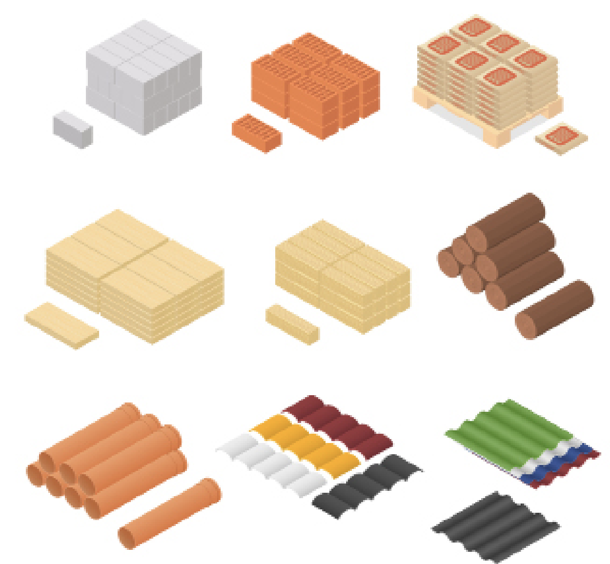

D’après Catherine Rossi (London Lecture series), historienne du design, le Craft est aujourd’hui présenté comme une méthode de production de luxe très populaire. C’est très populaire sur instagram ou Etsy et les millenials sont visées par les petites compagnies. Les procédés artisanaux longs et locaux sont mis en exergue. Les vases et les objets de tables sont très vendus dans notre contexte post industriel, particulièrement en Angleterre.
Il est à noter que les valeurs positives que nous attribuons au craft ne sont pas réellement pérennes sur une échelle de production plus large et moins chère. On veut néanmoins que le cœur humain, dans cet ère d’automatisation, soit la clef de voûte de notre commerce. Le fait de posséder des objets de craft individualisé pourrait nous donner plus de fierté et un plus grand sens de l’appartenance et donc on prendrait soin de nos possessions.
LINK 1 CLICK ME PLZ ! link2